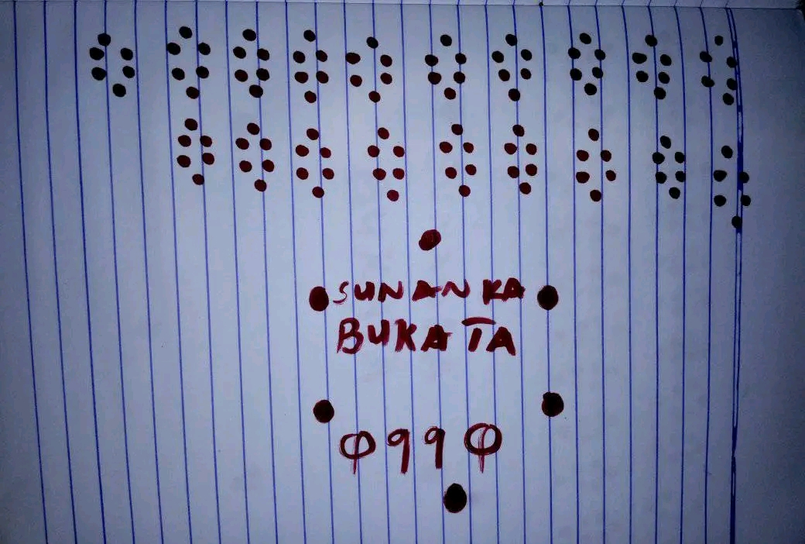
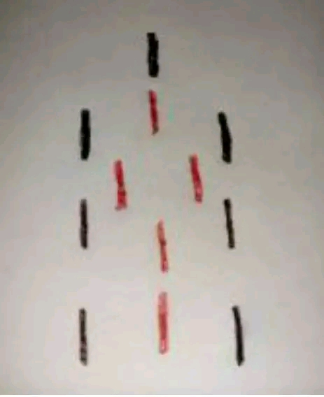
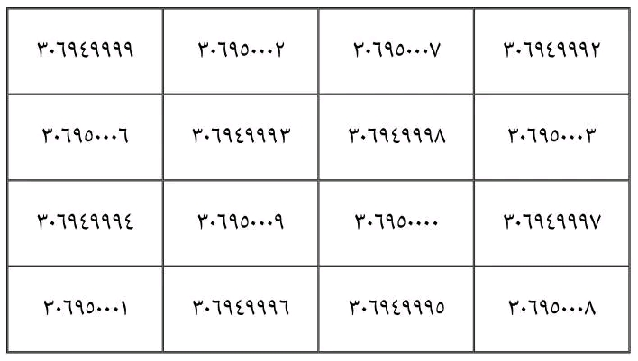

Asararu Zallah
Admin
SIRRIN SAMUN FATAHI DA ƊAUKAKA
Wannan sirri ne mai matukar tasiri musamman ga masu neman ɗaukaka da kuma neman harka da manyan mutane da sauran makamantansu
Yanda ake wannan aikin shine
Zaka samu farin takarda ka zana shakalin iskafi kamar yadda kuke gani a Wannan hoton ƙafa 20 amma na ashirin ɗin zaka buɗashi sosai farko sai ka rubuta sunanka a ƙasan sunanka kuka ka saka bukatar ka, sai kuma a ƙasa ka rubuta abinda ka gani,
Bayan ka gama sai ka naɗe fefan ka naɗe da zare fari da ja da kuma baƙi sannan sai ka binne shi a ƙofar gidan ka
NB: wannan aikin ranar Alhamis ko juma'a ko Litinin akeyinshi

Asararu Zallah
Admin
SIRRIN SAMUN KUƊI
Idan kanason samun kuɗaɗe dayawa kullum ya danganta da kuɗin da kayi amfani dashi kuma kuɗin garinku, wannan sirrin fa Mujarrabun ne sosai ina yiwa mutane aikin shi kuma nima kaina nayi amfani dashi insha Allahu duk wanda yayi shi dai dai to za'a dace matsawar bashi da matsala ta ijaba
Yadda ake aikin shine ana samun sabon kuɗi sabo fill sai s rubuta wannan shakalin guda biyu rahiƙa da naƙiyya amma za a sako naƙiyar acikin rahiƙar kamar yadda kuke gani a hoto, za'a rubutashi ƙafa 77 akan wannan sabon kuɗin to bayan an rubuta sai ake saka kuɗin acikin aljihu ko wallet, sannan kuma sai ake rubuta shi akan allo a wanke kullum da safe a shafe jiki dashi duka har tsawon kwana 7 sati ɗaya kenan hmmm zakaga ikon Allah wajen samun kuɗi
NB: Ba'a zuwa maƙabarta da wannan kuɗin a kiyaye

Asararu Zallah
Admin
SIRRIN BUƊI NA JALABI
Wannan Hatimin da kuke gani hatimine da aka cireshi daga suratul sharhi (Alam nashrah) kuma wannan Yana aiki sosai dan Mujarrabun ne a wurina saboda haka duk mai buƙatar Allah ya buɗa masa hanyoyin samun kuɗi masu yawa to ya jarraba wannan aikin insha Allahu za'a ga biyan buƙata da yardar Ubangiji
Yanda ake anfani da shi shine
Ana rubuta wannan hatimin ƙafa 41 sai a wanke a raba ruwan gida biyu,
Na farko zaka zuba turaren Binta Sudan aciki na biyun kuma babu abinda zaka zuba aciki
Saboda haka kullum da daddare zakayi sallah rakaa biyu raka ar farko fatiha da alam nashrah ƙafa 100 haka raka'a ta biyu ma bayan ka sallame sai ka ɗebo ruwan rubutun nan da ka saka Binta Sudan ka shafa a jikin ka haka nan sai ka sake ɗebo rubutun da baka saka komai ba ka sha kaɗan bayan ka gama sha, sai ka ɗauko charbinka kayi wuridin alam nashrah ƙafa 1000, to haka zakayi tayi kullum har tsawon kwana 7 dai dai lokacin rubutun zai ƙare Wallahi Wallahi wannan babban jalabi ne da muke ɓoyewa an baku fisabilillahi
